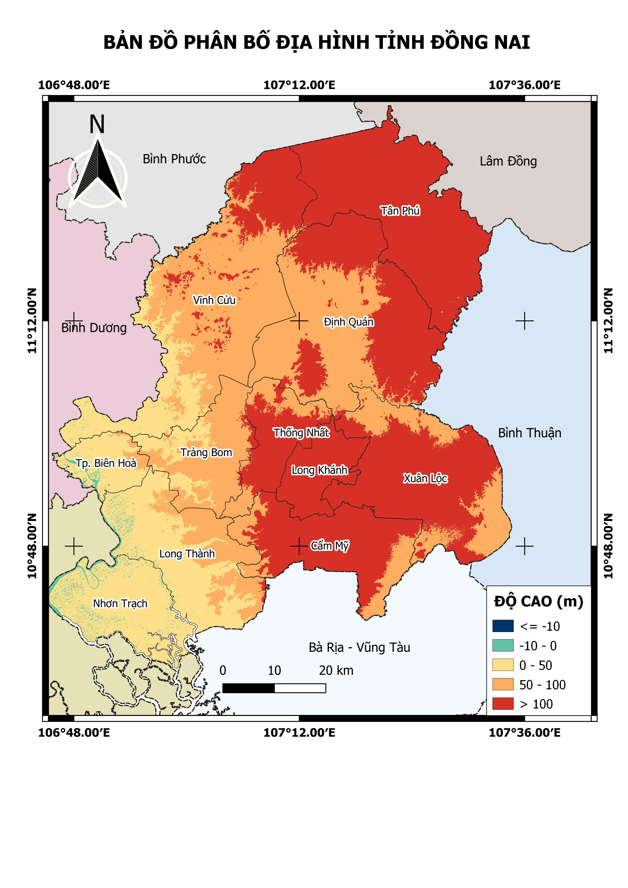

Dong Nai Elevation (2024)
Updated: Jul 2025
 Land Use in Can Tho (2023)
Land Use in Can Tho (2023)
Updated: Jun 2025

I am a GIS & Remote Sensing Analyst with over 5 years of experience in geospatial analysis, satellite data processing, and digital mapping. My expertise spans Google Earth Engine, QGIS, ArcGIS, Python, and data visualization for urban planning, agriculture, and climate resilience.
🎓 Education:
• MSc in Cartography, Remote Sensing & GIS (2021–2025) – HCMC University of Technology
• BSc in Oceanography, Meteorology & Hydrology (2011–2015) – HCMC University of Science
📍 Ho Chi Minh City | ✉️ tvdung1292@gmail.com | 📞 +84 372 251 694
🔗 LinkedIn
Updated: Jul 2025
Land Use in Can Tho (2023)
Updated: Jun 2025